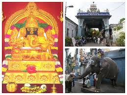
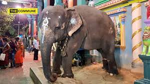

- Manakula Vinayagar Temple is a Hindu temple in the Union Territory of
Puducherry, India.
- Dedicated to the god Ganesa, it is a popular pilgrimage
site and tourist destination in Puducherry.
- The temple is of considerable
antiquity and predates French occupation of the territory.
- During the
tenure of Dupleix, there were attempts to destroy the temple, but it was
spared owing to strong protests from the Hindu population and the threat
of British and Maratha invasion of the territory.